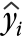

Fitted values
A linear model,
y = b0 + b1 x
involves two constants (the slope and intercept) whose values are unknown; they are called unknown parameters of the model. How should we set their values to match a particular data set?
To assess how well a particular linear model fits any one of our data points, (xi, yi), we might consider how well the model would predict the y-value of the point,
|  | = b0 + b1 xi |
These predictions for the x-values in the data set are called fitted values.
Residuals
The difference between the fitted values for a data point and its actual y-value is called the point's residual.
| ei = yi − |
The residuals describe the 'errors' that would have resulted from using the model to predict the response for the x-values in the data.
Teachers' salaries
The scatterplot below shows the initial annual salary (US$ thousand) for teachers in upper secondary education and GDP per capita (also US$ thousand) in 2012 for OECD countries. As might be expected, countries with high GDP also tend to pay their teachers more.
A line that we may consider as a linear model for these data is drawn in grey on the plot.
Click on individual crosses to determine the country from which the measurements were made. The fitted values and residuals are also displayed above the scatterplot. For example Luxembourg, the top right cross, has an actual response value of 72.50 (i.e. it pays initial teachers $72,500 per annum); this is the vertical position of its cross. Its fitted value is 68.85 and its residual is 3.65, so it pays its teachers $3,650 per annum more than the model predicts for a country with this GDP.
Note that the residuals are the vertical distances of the crosses to the line.